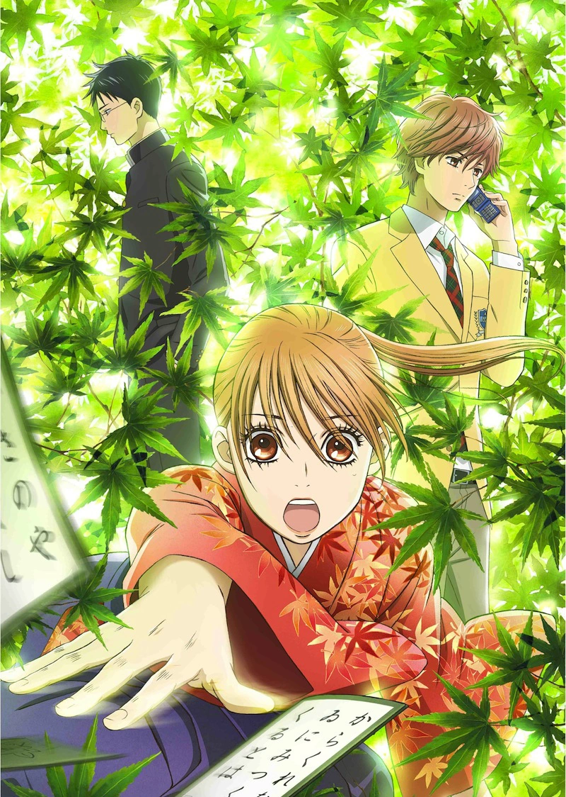

Sinopsis
Anime (Animasi Jepang) ini bercerita tentang Ayase Chihaya dengan kedua sahabatnya yaitu Mashima Taichi dan Wataya Arata yang bercita-cita menjadi Meijin (master) gelar juara untuk kategori putra dan Queen untuk juara Karuta kategori putri. Karuta sendiri merupakan permainan kartu bergambar yang berasal dari Jepang.
Di awal episode kita disuguhkan dengan perjuangan Chihaya untuk mendirikan ekskul karuta di SMA barunya. Kecintaanya kepada permainan karuta berawal dari sekolah dasar dulu. Chihaya dan sahabatnya Taichi dikenalkan karuta oleh seorang murid baru bernama Arata. Lalu mereka bermain bersama hingga berpisah masing-masing saat SMP, dan janji agar bertemu lagi di kejuaraan karuta dan mendapatkan gelar Master dan Queen karuta. Tujuan Chihaya mendirikan ekskul karuta tidak lain adalah untuk membentuk tim agar dapat bermain di kejuaraan karuta kelompok, dan bermain dengan Arata dan Taichi lagi.
Mungkinkah mereka akan dipertemukan kembali? Kira-kira seperti apakah perjuangan Chihaya untuk mendapatkan gelar Queen? Semua akan dibahas tuntas di Chihayafuru.